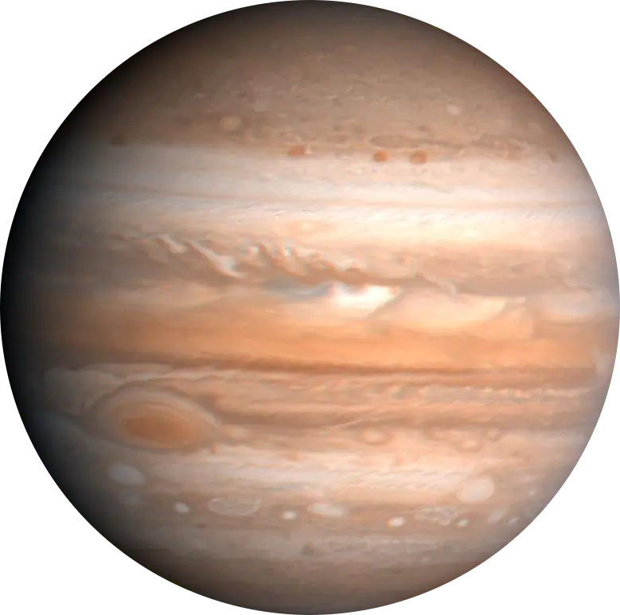

Planet Raksasa Gas (Gas Giant)
Yupiter adalah planet kelima dari Matahari dan merupakan planet terbesar di Tata Surya. Sebagai raksasa gas (gas giant), massanya mencapai 2,5 kali lipat dari gabungan seluruh planet lainnya di Tata Surya, atau sekitar 318 kali massa Bumi. Komposisi utama Yupiter didominasi oleh hidrogen (~90%) dan helium (~10%), menyerupai komposisi bintang induk Matahari. Yupiter terkenal dengan garis-garis awan pita (zones dan belts) yang dinamis serta badai antisisklon raksasa "Bintik Merah Raksasa" (Great Red Spot) yang telah berputar selama ratusan tahun. Gravitasi Yupiter yang sangat kuat memainkan peran kunci dalam menstabilkan dinamika keplanetan Tata Surya dan mengontrol populasi asteroid.